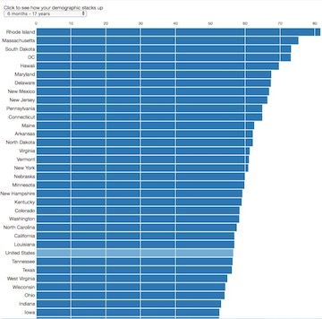

Hi, I'm a freelance reporter who covers state and metro government in Atlanta.
Print bylines in McClatchy's Georgia papers, SaportaReport, Creative Loafing and others.
Also, I do maps and data visualizations.
maggie.a.lee[ at ]gmail.com
404-five three eight-2740


A clickable building age map.
Longform version as developed.
Live version, as modified to fit in client's CMS.
Github
Ingredients: QGIS, spatial join, map, Carto, Carto.js, Leaflet, JavaScript, geojson, HTML, CSS, Python, web scraping, Flask, Jinja
What would Bibb schools' racial makeup be if everyone went to their zoned school?

A couple of maps to go with a series about public school re-segreation, done by Georgia Public Broadcasting and the Macon Telegraph.
Live version (soft paywall.)
Unpaywalled version, maps only, no legend, no text: high schools and elementary schools
Ingredients: QGIS, Carto, CSV, Census
Georgians squeeze into metro Atlanta. Here's how much:

I just saw some other folks doing cartograms and I wanted to try one.
It's written in D3.js and cartogram.js.
Github
Ingredients: Cartogram, cartoram.js, D3.js, HTML, CSS
Georgia and Atlanta politics Twitter bot

@GaPolBot monitors public Georgia and Atlanta public agency websites and RSS feeds and tweets what it finds. Like, the governor's executive orders and state environmental fines.
It uses several methods: Web scrapers, IFTTT.com recipies and heck, one agency has an API.
Ingredients: Python, Twitter, bot, Tweepy
Georgia lawmakers write ~4,800 things, mostly honors

This is a just for fun one too. I wanted to show people what gets filed and handled in the Georgia legislature. I wrote a little Python script to scrape, then categorize, these bills.
And lo, they featured it in Data Driven Journalism, which was cool.
Github
Ingredients: Python, web scraping, D3.js, Photoshop
About 26,000 refugees moved to Georgia in 10 years. Here's where most came from and went to in metro Atlanta

This uses some U.S. State Department data. A version of the graph ran with text/context on the AJC sometime in 2016, but their page doesn't seem to be up anymore 🤷.
Unframed version
Github
Ingredients: D3.js, JavaScript, HTML, CSS, CSV
Georgia's flu vaccination rate and hospitalization for symptoms

Some D3.js interactives about the flu for the Atlanta Journal-Constitution.
Github
Ingredients: D3.js, HTML, CSS, line graph, bar graph, interactivity
Excel is for reporters, not just accountants
Eight newsroom hacks that don't require coding
How to schedule a Python script in a piece of cloud, using an Amazon AWS EC2 instance (a tiny virtual server) and cron (a scheduler that is built into it.)